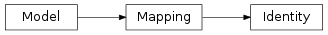
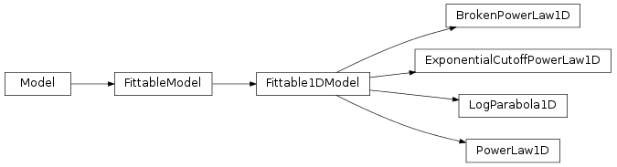
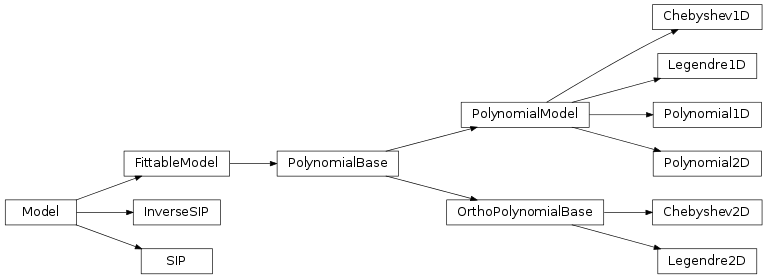
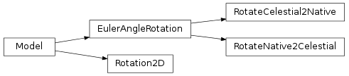
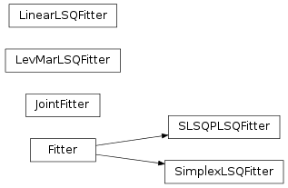
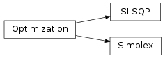

Models and Fitting (astropy.modeling)¶
Introduction¶
astropy.modeling provides a framework for representing models and performing model evaluation and fitting. It currently supports 1-D and 2-D models and fitting with parameter constraints.
It is designed to be easily extensible and flexible. Models do not reference fitting algorithms explicitly and new fitting algorithms may be added without changing the existing models (though not all models can be used with all fitting algorithms due to constraints such as model linearity).
The goal is to eventually provide a rich toolset of models and fitters such that most users will not need to define new model classes, nor special purpose fitting routines (while making it reasonably easy to do when necessary).
Note
astropy.modeling is currently a work-in-progress, and thus it is likely there will still be API changes in later versions of Astropy. Backwards compatibility support between versions will still be maintained as much as possible, but new features and enhancements are coming in future versions. If you have specific ideas for how it might be improved, feel free to let us know on the astropy-dev mailing list or at http://feedback.astropy.org
Getting started¶
The examples here use the predefined models and assume the following modules have been imported:
>>> import numpy as np
>>> from astropy.modeling import models, fitting
Using Models¶
The astropy.modeling package defines a number of models that are collected under a single namespace as astropy.modeling.models. Models behave like parametrized functions:
>>> from astropy.modeling import models
>>> g = models.Gaussian1D(amplitude=1.2, mean=0.9, stddev=0.5)
>>> print(g)
Model: Gaussian1D
Inputs: ('x',)
Outputs: ('y',)
Model set size: 1
Parameters:
amplitude mean stddev
--------- ---- ------
1.2 0.9 0.5
Model parameters can be accessed as attributes:
>>> g.amplitude
Parameter('amplitude', value=1.2)
>>> g.mean
Parameter('mean', value=0.9)
>>> g.stddev
Parameter('stddev', value=0.5)
and can also be updated via those attributes:
>>> g.amplitude = 0.8
>>> g.amplitude
Parameter('amplitude', value=0.8)
Models can be evaluated by calling them as functions:
>>> g(0.1)
0.22242984036255528
>>> g(np.linspace(0.5, 1.5, 7))
array([ 0.58091923, 0.71746405, 0.7929204 , 0.78415894, 0.69394278,
0.54952605, 0.3894018 ])
As the above example demonstrates, in general most models evaluate array-like inputs according to the standard Numpy broadcasting rules for arrays.
Models can therefore already be useful to evaluate common functions, independently of the fitting features of the package.
Simple 1-D model fitting¶
In this section, we look at a simple example of fitting a Gaussian to a simulated dataset. We use the Gaussian1D and Trapezoid1D models and the LevMarLSQFitter fitter to fit the data:
import numpy as np
from astropy.modeling import models, fitting
# Generate fake data
np.random.seed(0)
x = np.linspace(-5., 5., 200)
y = 3 * np.exp(-0.5 * (x - 1.3)**2 / 0.8**2)
y += np.random.normal(0., 0.2, x.shape)
# Fit the data using a box model
t_init = models.Trapezoid1D(amplitude=1., x_0=0., width=1., slope=0.5)
fit_t = fitting.LevMarLSQFitter()
t = fit_t(t_init, x, y)
# Fit the data using a Gaussian
g_init = models.Gaussian1D(amplitude=1., mean=0, stddev=1.)
fit_g = fitting.LevMarLSQFitter()
g = fit_g(g_init, x, y)
# Plot the data with the best-fit model
plt.figure(figsize=(8,5))
plt.plot(x, y, 'ko')
plt.plot(x, t(x), 'b-', lw=2, label='Trapezoid')
plt.plot(x, g(x), 'r-', lw=2, label='Gaussian')
plt.xlabel('Position')
plt.ylabel('Flux')
plt.legend(loc=2)
(Source code, png, hires.png, pdf)
{kind=link}
{kind=link}
As shown above, once instantiated, the fitter class can be used as a function that takes the initial model (t_init or g_init) and the data values (x and y), and returns a fitted model (t or g).
Simple 2-D model fitting¶
Similarly to the 1-D example, we can create a simulated 2-D data dataset, and fit a polynomial model to it. This could be used for example to fit the background in an image.
import warnings
import numpy as np
from astropy.modeling import models, fitting
# Generate fake data
np.random.seed(0)
y, x = np.mgrid[:128, :128]
z = 2. * x ** 2 - 0.5 * x ** 2 + 1.5 * x * y - 1.
z += np.random.normal(0., 0.1, z.shape) * 50000.
# Fit the data using astropy.modeling
p_init = models.Polynomial2D(degree=2)
fit_p = fitting.LevMarLSQFitter()
with warnings.catch_warnings():
# Ignore model linearity warning from the fitter
warnings.simplefilter('ignore')
p = fit_p(p_init, x, y, z)
# Plot the data with the best-fit model
plt.figure(figsize=(8,2.5))
plt.subplot(1,3,1)
plt.imshow(z, origin='lower', interpolation='nearest', vmin=-1e4, vmax=5e4)
plt.title("Data")
plt.subplot(1,3,2)
plt.imshow(p(x, y), origin='lower', interpolation='nearest', vmin=-1e4,
vmax=5e4)
plt.title("Model")
plt.subplot(1,3,3)
plt.imshow(z - p(x, y), origin='lower', interpolation='nearest', vmin=-1e4,
vmax=5e4)
plt.title("Residual")
(Source code, png, hires.png, pdf)
{kind=link}
{kind=link}
A list of models is provided in the Reference/API section. The fitting framework includes many useful features that are not demonstrated here, such as weighting of datapoints, fixing or linking parameters, and placing lower or upper limits on parameters. For more information on these, take a look at the Fitting Models to Data documentation.
Model sets¶
In some cases it is necessary to describe many models of the same type but with different sets of parameter values. This could be done simply by instantiating as many instances of a Model as are needed. But that can be inefficient for a large number of models. To that end, all model classes in astropy.modeling can also be used to represent a model set which is a collection of models of the same type, but with different values for their parameters.
To instantiate a model set, use argument n_models=N where N is the number of models in the set when constructing the model. The value of each parameter must be a list or array of length N, such that each item in the array corresponds to one model in the set:
>>> g = models.Gaussian1D(amplitude=[1, 2], mean=[0, 0],
... stddev=[0.1, 0.2], n_models=2)
>>> print(g)
Model: Gaussian1D
Inputs: ('x',)
Outputs: ('y',)
Model set size: 2
Parameters:
amplitude mean stddev
--------- ---- ------
1.0 0.0 0.1
2.0 0.0 0.2
This is equivalent to two Gaussians with the parameters amplitude=1, mean=0, stddev=0.1 and amplitude=2, mean=0, stddev=0.2 respectively. When printing the model the parameter values are displayed as a table, with each row corresponding to a single model in the set.
The number of models in a model set can be determined using the len builtin:
>>> len(g)
2
Single models have a length of 1, and are not considered a model set as such.
When evaluating a model set, by default the input must be the same length as the number of models, with one input per model:
>>> g([0, 0.1])
array([ 1. , 1.76499381])
The result is an array with one result per model in the set. It is also possible to broadcast a single value to all models in the set:
>>> g(0)
array([ 1., 2.])
Model sets are used primarily for fitting, allowing a large number of models of the same type to be fitted simultaneously (and independently from each other) to some large set of inputs. For example, fitting a polynomial to the time response of each pixel in a data cube. This can greatly speed up the fitting process, especially for linear models.
Compound models¶
New in version 1.0: This feature is experimental and expected to see significant further development, but the basic usage is stable and expected to see wide use.
While the Astropy modeling package makes it very easy to define new models either from existing functions, or by writing a Model subclass, an additional way to create new models is by combining them using arithmetic expressions. This works with models built into Astropy, and most user-defined models as well. For example, it is possible to create a superposition of two Gaussians like so:
>>> from astropy.modeling import models
>>> g1 = models.Gaussian1D(1, 0, 0.2)
>>> g2 = models.Gaussian1D(2.5, 0.5, 0.1)
>>> g1_plus_2 = g1 + g2
The resulting object g1_plus_2 is itself a new model. Evaluating, say, g1_plus_2(0.25) is the same as evaluating g1(0.25) + g2(0.25):
>>> g1_plus_2(0.25)
0.5676756958301329
>>> g1_plus_2(0.25) == g1(0.25) + g2(0.25)
True
This model can be further combined with other models in new expressions. It is also possible to define entire new model classes using arithmetic expressions of other model classes. This allows general compound models to be created without specifying any parameter values up front. This more advanced usage is explained in more detail in the compound model documentation.
These new compound models can also be fitted to data, like most other models:
import numpy as np
from astropy.modeling import models, fitting
# Generate fake data
np.random.seed(42)
g1 = models.Gaussian1D(1, 0, 0.2)
g2 = models.Gaussian1D(2.5, 0.5, 0.1)
x = np.linspace(-1, 1, 200)
y = g1(x) + g2(x) + np.random.normal(0., 0.2, x.shape)
# Now to fit the data create a new superposition with initial
# guesses for the parameters:
gg_init = models.Gaussian1D(1, 0, 0.1) + models.Gaussian1D(2, 0.5, 0.1)
fitter = fitting.SLSQPLSQFitter()
gg_fit = fitter(gg_init, x, y)
# Plot the data with the best-fit model
plt.figure(figsize=(8,5))
plt.plot(x, y, 'ko')
plt.plot(x, gg_fit(x), 'r-', lw=2)
plt.xlabel('Position')
plt.ylabel('Flux')
(Source code, png, hires.png, pdf)
{kind=link}
{kind=link}
This works for 1-D models, 2-D models, and combinations thereof, though there are some complexities involved in correctly matching up the inputs and outputs of all models used to build a compound model. You can learn more details in the Compound Models documentation.
Using astropy.modeling¶
Reference/API¶
astropy.modeling Module¶
This subpackage provides a framework for representing models and performing model evaluation and fitting. It supports 1D and 2D models and fitting with parameter constraints. It has some predefined models and fitting routines.
Functions¶
| custom_model(*args, **kwargs) | Create a model from a user defined function. |
Classes¶
| Fittable1DModel | Base class for one-dimensional fittable models. |
| Fittable2DModel | Base class for two-dimensional fittable models. |
| FittableModel | Base class for models that can be fitted using the built-in fitting algorithms. |
| InputParameterError | Used for incorrect input parameter values and definitions. |
| LabeledInput(*args, **kwargs) | Deprecated since version 1.0. |
| Model | Base class for all models. |
| ModelDefinitionError | Used for incorrect models definitions |
| Parameter([name, description, default, ...]) | Wraps individual parameters. |
| SerialCompositeModel | Deprecated since version 1.0. |
| SummedCompositeModel | Deprecated since version 1.0. |
Class Inheritance Diagram¶

astropy.modeling.mappings Module¶
Special models useful for complex compound models where control is needed over which outputs from a source model are mapped to which inputs of a target model.
Classes¶
| Mapping | Allows inputs to be reordered, duplicated or dropped. |
| Identity | Returns inputs unchanged. |
Class Inheritance Diagram¶

astropy.modeling.functional_models Module¶
Mathematical models.
Functions¶
| custom_model_1d(*args, **kwargs) | Deprecated since version 1.0. |
Classes¶
| AiryDisk2D | Two dimensional Airy disk model. |
| Box1D | One dimensional Box model. |
| Box2D | Two dimensional Box model. |
| Const1D | One dimensional Constant model. |
| Const2D | Two dimensional Constant model. |
| Disk2D | Two dimensional radial symmetric Disk model. |
| Ellipse2D | A 2D Ellipse model. |
| Gaussian1D | One dimensional Gaussian model. |
| Gaussian2D | Two dimensional Gaussian model. |
| GaussianAbsorption1D | One dimensional Gaussian absorption line model. |
| Linear1D | One dimensional Line model. |
| Lorentz1D | One dimensional Lorentzian model. |
| MexicanHat1D | One dimensional Mexican Hat model. |
| MexicanHat2D | Two dimensional symmetric Mexican Hat model. |
| Moffat1D | One dimensional Moffat model. |
| Moffat2D | Two dimensional Moffat model. |
| Redshift | One dimensional redshift model. |
| Ring2D | Two dimensional radial symmetric Ring model. |
| Scale | Multiply a model by a factor. |
| Shift | Shift a coordinate. |
| Sine1D | One dimensional Sine model. |
| Trapezoid1D | One dimensional Trapezoid model. |
| TrapezoidDisk2D | Two dimensional circular Trapezoid model. |
Class Inheritance Diagram¶
![Inheritance diagram of astropy.modeling.functional_models.AiryDisk2D, astropy.modeling.functional_models.Box1D, astropy.modeling.functional_models.Box2D, astropy.modeling.functional_models.Const1D, astropy.modeling.functional_models.Const2D, astropy.modeling.functional_models.Disk2D, astropy.modeling.functional_models.Ellipse2D, astropy.modeling.functional_models.Gaussian1D, astropy.modeling.functional_models.Gaussian2D, astropy.modeling.functional_models.GaussianAbsorption1D, astropy.modeling.functional_models.Linear1D, astropy.modeling.functional_models.Lorentz1D, astropy.modeling.functional_models.MexicanHat1D, astropy.modeling.functional_models.MexicanHat2D, astropy.modeling.functional_models.Moffat1D, astropy.modeling.functional_models.Moffat2D, astropy.modeling.functional_models.Redshift, astropy.modeling.functional_models.Ring2D, astropy.modeling.functional_models.Scale, astropy.modeling.functional_models.Shift, astropy.modeling.functional_models.Sine1D, astropy.modeling.functional_models.Trapezoid1D, astropy.modeling.functional_models.TrapezoidDisk2D](../_images/inheritance-f28a1f995f0b9969ddb9cabd963271dd0fa02baa.png)
astropy.modeling.powerlaws Module¶
Power law model variants
Classes¶
| BrokenPowerLaw1D | One dimensional power law model with a break. |
| ExponentialCutoffPowerLaw1D | One dimensional power law model with an exponential cutoff. |
| LogParabola1D | One dimensional log parabola model (sometimes called curved power law). |
| PowerLaw1D | One dimensional power law model. |
Class Inheritance Diagram¶

astropy.modeling.polynomial Module¶
This module contains predefined polynomial models.
Classes¶
| Chebyshev1D | 1D Chebyshev polynomial of the 1st kind. |
| Chebyshev2D | 2D Chebyshev polynomial of the 1st kind. |
| InverseSIP | Inverse Simple Imaging Polynomial |
| Legendre1D | 1D Legendre polynomial. |
| Legendre2D | Legendre 2D polynomial. |
| Polynomial1D | 1D Polynomial model. |
| Polynomial2D | 2D Polynomial model. |
| SIP | Simple Imaging Polynomial (SIP) model. |
| OrthoPolynomialBase | This is a base class for the 2D Chebyshev and Legendre models. |
| PolynomialModel | Base class for polynomial models. |
Class Inheritance Diagram¶

astropy.modeling.projections Module¶
Implements projections–particularly sky projections defined in WCS Paper II [R17]
All angles are set and and displayed in degrees but internally computations are performed in radians.
Classes¶
| Projection | Base class for all sky projections. |
| Pix2SkyProjection | Base class for all Pix2Sky projections. |
| Sky2PixProjection | Base class for all Sky2Pix projections. |
| Pix2Sky_AZP | AZP : Zenital perspective projection - pixel to sky. |
| Sky2Pix_AZP | AZP : Zenital perspective projection - sky to pixel. |
| Pix2Sky_CAR | CAR: Plate carree projection - pixel to sky. |
| Sky2Pix_CAR | CAR: Plate carree projection - sky to pixel. |
| Pix2Sky_CEA | CEA : Cylindrical equal area projection - pixel to sky. |
| Sky2Pix_CEA | CEA: Cylindrical equal area projection - sky to pixel. |
| Pix2Sky_CYP | CYP : Cylindrical perspective - pixel to sky. |
| Sky2Pix_CYP | CYP : Cylindrical Perspective - sky to pixel. |
| Pix2Sky_MER | MER: Mercator - pixel to sky. |
| Sky2Pix_MER | MER: Mercator - sky to pixel. |
| Pix2Sky_SIN | SIN : Slant orthographic projection - pixel to sky. |
| Sky2Pix_SIN | SIN : Slant orthographic projection - sky to pixel. |
| Pix2Sky_STG | STG : Stereographic Projection - pixel to sky. |
| Sky2Pix_STG | STG : Stereographic Projection - sky to pixel. |
| Pix2Sky_TAN | TAN : Gnomonic projection - pixel to sky. |
| Sky2Pix_TAN | TAN : Gnomonic Projection - sky to pixel. |
| AffineTransformation2D | Perform an affine transformation in 2 dimensions. |
Class Inheritance Diagram¶
![Inheritance diagram of astropy.modeling.projections.Projection, astropy.modeling.projections.Pix2SkyProjection, astropy.modeling.projections.Sky2PixProjection, astropy.modeling.projections.Pix2Sky_AZP, astropy.modeling.projections.Sky2Pix_AZP, astropy.modeling.projections.Pix2Sky_CAR, astropy.modeling.projections.Sky2Pix_CAR, astropy.modeling.projections.Pix2Sky_CEA, astropy.modeling.projections.Sky2Pix_CEA, astropy.modeling.projections.Pix2Sky_CYP, astropy.modeling.projections.Sky2Pix_CYP, astropy.modeling.projections.Pix2Sky_MER, astropy.modeling.projections.Sky2Pix_MER, astropy.modeling.projections.Pix2Sky_SIN, astropy.modeling.projections.Sky2Pix_SIN, astropy.modeling.projections.Pix2Sky_STG, astropy.modeling.projections.Sky2Pix_STG, astropy.modeling.projections.Pix2Sky_TAN, astropy.modeling.projections.Sky2Pix_TAN, astropy.modeling.projections.AffineTransformation2D](../_images/inheritance-cb09bc0012381ded918c0ebcf56356aabedfc345.png)
astropy.modeling.rotations Module¶
Implements rotations, including spherical rotations as defined in WCS Paper II [R18]
RotateNative2Celestial and RotateCelestial2Native follow the convention in WCS Paper II to rotate to/from a native sphere and the celestial sphere.
The user interface sets and displays angles in degrees but the values are stored internally in radians. This is managed through the parameter setters/getters.
Classes¶
| RotateCelestial2Native | Transformation from Celestial to Native to Spherical Coordinates. |
| RotateNative2Celestial | Transformation from Native to Celestial Spherical Coordinates. |
| Rotation2D | Perform a 2D rotation given an angle in degrees. |
Class Inheritance Diagram¶

astropy.modeling.fitting Module¶
This module implements classes (called Fitters) which combine optimization algorithms (typically from scipy.optimize) with statistic functions to perform fitting. Fitters are implemented as callable classes. In addition to the data to fit, the __call__ method takes an instance of FittableModel as input, and returns a copy of the model with its parameters determined by the optimizer.
Optimization algorithms, called “optimizers” are implemented in optimizers and statistic functions are in statistic. The goal is to provide an easy to extend framework and allow users to easily create new fitters by combining statistics with optimizers.
There are two exceptions to the above scheme. LinearLSQFitter uses Numpy’s lstsq function. LevMarLSQFitter uses leastsq which combines optimization and statistic in one implementation.
Classes¶
| LinearLSQFitter() | A class performing a linear least square fitting. |
| LevMarLSQFitter() | Levenberg-Marquardt algorithm and least squares statistic. |
| SLSQPLSQFitter() | SLSQP optimization algorithm and least squares statistic. |
| SimplexLSQFitter() | Simplex algorithm and least squares statistic. |
| JointFitter(models, jointparameters, initvals) | Fit models which share a parameter. |
| Fitter(optimizer, statistic) | Base class for all fitters. |
Class Inheritance Diagram¶

astropy.modeling.optimizers Module¶
Optimization algorithms used in fitting.
Classes¶
| Optimization(opt_method) | Base class for optimizers. |
| SLSQP() | Sequential Least Squares Programming optimization algorithm. |
| Simplex() | Neald-Mead (downhill simplex) algorithm [1]. |
Class Inheritance Diagram¶

astropy.modeling.statistic Module¶
Statistic functions used in fitting.
Functions¶
| leastsquare(measured_vals, updated_model, ...) | Least square statistic with optional weights. |